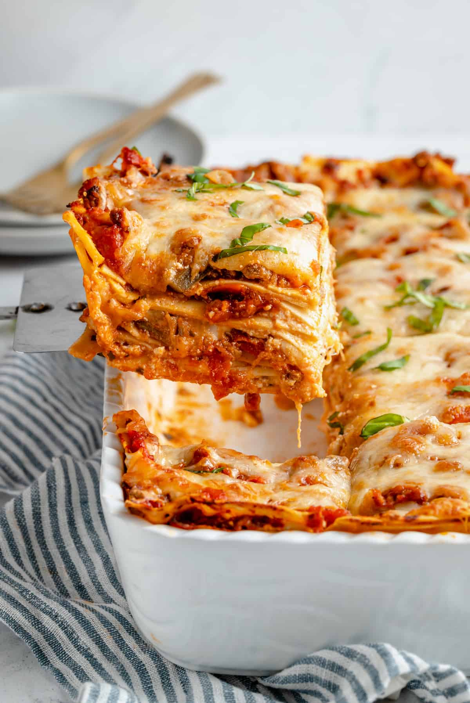

Diary Free Lasagna

Recipe Description
This dairy free lasagna uses an alternative vegan ricotta
that may be bought at the store or made from scratch.
Ingrediants for Lasagna
- Lasagna noodles - 1 package
- Ground beef - 2 lbs.
- Minced Garlic - 2 tsp.
- Dried Basil - 2 tsp.
- Dried parsley - 1 tsp.
- Salt - 1 tsp.
- Jar of Marinara sauce - 2x23 oz.
- Vegan ricotta - 3 cups
- Chopped fresh parsely (optional garnish)
Ingrediants for Non-dairy Reicotta
- Slivered almonds, soaked overnight - 1 1/2 cup
- Tofu pressed - 6 oz
- Plain unsweetened coconut yogurt - 1/2 cup
- Lemon juice - 1 tbs
- Garlic minced - 1 tsp
- Nutritional yeast - tbs
- Salt - 1 tsp
- Dried parsley - 1/2 tsp
- Almond Milk - 1/4 cup
- Black peppper - to taste
Instructions
- Prepare lasagna noodles according to package
directions
- Combine all ingrediants for the ricotta in a food
processor. Blend mixture until texture matches that
of ricotta cheese. Refrigerate until ready to use.
- Heat large skillet to medium-high. Add ground
meat and cook until browned. Season with garlic, basil
parsley and salt. Then stir in marana sauce. Remove
from hear and set aside
- Preheat oven to 375 degrees.
- Layer the lasagna by first cover the bottom of the
pan with meat sauce. Add a single layer of noodles.
Next add a layer of ricotta. Repeat this process at
least three times.
- Cook 40-50 minutes until browned and side are
bubbling. Let rest for 10 minutes before serving.
Back to Recipe List